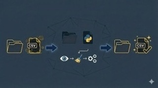

Projetos

Projeto ETL
Pipeline ETL desenvolvido em Python e SQL, com extração, transformação e carga de dados para análise.
Ver no GitHubProjeto SQL – Análise Financeira
Consulta SQL avançada para análise financeira, utilizando múltiplos JOINs, regras de negócio, filtros dinâmicos e tratamento de dados.
Ver no GitHubProjeto Olist – Análise de E-commerce
Análise de ponta a ponta com 100 mil pedidos reais: BigQuery, SQL, modelagem em esquema estrela e dashboard no Power BI com DAX.
Ver no GitHub